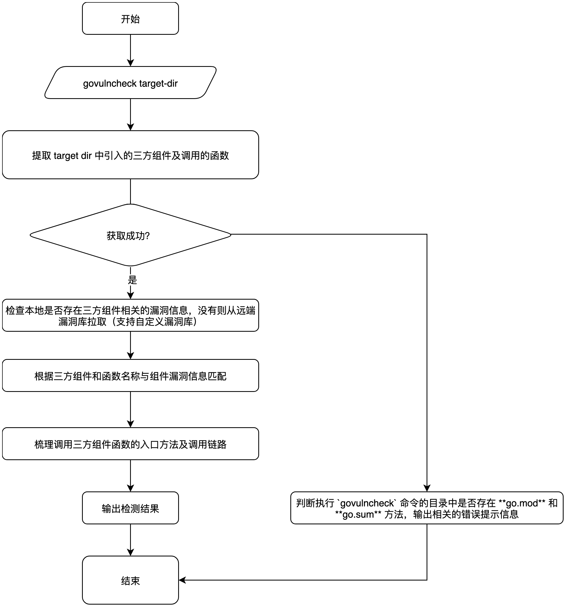

2022-09-06，Go 安全团队正式对外宣布Go漏洞管理工具 Govulncheck， Govulncheck 是一款面向开发者的供应链漏洞检测工具，通过分析源代码或编译后的二进制文件，分析项目中引入的三方包及相关函数，然后在漏洞库 https://vuln.go.dev/ 中查询是否是否存在漏洞。
值得称赞的是， Govulncheck 在三方包的名称和版本进行漏洞匹配的基础上，还分析了三方包中的函数是否被调用，以及相关的调用路径。此外， Govulncheck 还结合了 Go 版本、操作系统的版本和架构做进一步的漏洞筛选，最终只展示在当前操作系统和 Go 语言版本中，具有真实危害的三方包。例如，对于 Linux 平台运行的二进制文件，不会报告具有 Windows 特定依赖条件的三方包漏洞，更详细的内容可以查看官方文档。
Govulncheck 通过分析二进制文件的符号信息查找出三方包及显式调用的函数，根据三方包和函数查找漏洞库，最终确定三方包是否存在漏洞，因此 Govulncheck 无法检测去除符号表信息的二进制文件。但是，生产环境中运行的 Go 二进制文件基本上都会去除符号表信息，减小体积并提高安全性。这一点也更加印证了 Govulncheck 的核心定位是一款为 Developer 开发的 DevSecOps 工具。 Govulncheck 还有一些其它的不足，比如：只支持 Go 1.18 及以上版本编译的二进制文件，分析二进制文件时无法展示漏洞调用图等，更多的限制信息可以查看官方博客。
Govulncheck 快速使用
Govulncheck 的安装依赖 Golang 环境，安装环境之后，只需要在任意位置执行 go install golang.org/x/vuln/cmd/govulncheck@latest 命令即可。安装成功后，可以1
2
3
4
5
6
7
8
9
10
11
12
13
14$ govulncheck
usage:
govulncheck [flags] package...
govulncheck [flags] binary
-json
output JSON
-tags list
comma-separated list of build tags
-test
analyze test files. Only valid for source code.
-v print a full call stack for each vulnerability
For details, see https://pkg.go.dev/golang.org/x/vuln/cmd/govulncheck.
Govulncheck 分析 Golang 项目源码
需要注意的是 Govulncheck 必须在 Golang 项目的根目录运行，否则会因为目录不存在 go.mod 和 go.sum 文件，而否则无法检测。必须吐槽一下，当我们在项目根目录运行时，默认就是在当前目录检测，人类的做法是，不用输入参数，直接执行 govulncheck 即可，可它偏偏是个反人类。1
2$ cd ~/GolangProject/io.ast.plugins
$ govulncheck ./
检测结果显示，io.ast.plugins.main 包第10行13列的 main 方法调用了 io.ast.plugins/cmd.Execute 方法，最终，调用了 compress/gzip.Reader.Read 方法，路径很清晰，这时候，我对它一顿猛夸，太强了。然后，我一路跟下去发现啥也没有，项目中也没有显式调用这个包和方法，更离谱的是，它显示有漏洞的包是 compress/gzip，这是个 Golang 内置的包，也就是说，它给我说我的 Golang 开发环境有一个有漏洞的包，我引入的某个二方包用到了这个包的 Read 方法。啊，这。。。你猜我知道怎么修复吗？难不成，你是想让我升级一下 Golang 版本？瞬间体会到研发接到诡异的漏洞工单时的心情，真是美丽。
另外吐槽一点，我拿 tidb-dashboard 项目做测试，妥妥的啥也检测不出来，还给我说项目里没有 Go 文件，你这个小宝贝，我真是拿你一点办法也没有。
Govulncheck 分析 Golang 二进制文件
Govulncheck 分析二进制文件时，对位置没有要求，只要输入 Golang 编译后的二进制文件即可检测。
1 | govulncheck /Users/owefsad/GoProjects/io.ast.plugins/io.ast.plugins |
检测结果就不多说了，跟源码分析相比，除了缺少调用链路，其它的都一样。
Govulncheck 分析去除符号表 Golang 二进制文件
Golang 编译时，去除符号信息的命令：CGO_ENABLED=0 GOOS=linux GOARCH=amd64 go build -ldflags "-s -w" -trimpath
项目编译后，使用 Govulncheck 进行检测1
2
3
4
5 govulncheck /Users/owefsad/GoProjects/io.ast.plugins/io.ast.plugins
govulncheck is an experimental tool. Share feedback at https://go.dev/s/govulncheck-feedback.
Scanning for dependencies with known vulnerabilities...
govulncheck: vulncheck.Binary: reading go.func.*: no symbol "go.func.*"
Govulncheck 分析项目源代码原理
流程如下：
- 提取项目中使用到的三方组件和函数信息
- 如果执行失败，则判断执行
govulncheck命令的目录中是否存在 go.mod 和 go.sum 方法，输出相关的错误提示信息 - 拉取三方组件相关的漏洞信息（该操作会优先检查本地文件缓存）
- 根据三方组件和函数名称与漏洞信息进行匹配
- 梳理三方组件函数的调用入口及相关的调用链路
- 输出检测结果

Govulncheck 分析二进制文件
无趣的小知识：Golang 编译的二进制文件，Mac下格式为
Mach-O，Linux 下格式为ELF
整体流程如下：
- 获取二进制文件的编译信息
- 获取二进制文件内Go函数的符号名称，在 Golang 1.18 和 1.19 中，函数的符号名称为
go.func.*，Golang 1.20 中函数的符号名称为go:func.* - 获取二进制文件中的 pclntab 信息
- 获取二进制文件的程序计数器及对应的行号，用于函数、语句、指令的位置
- 根据程序计数器和对应的行号，解码为对应的符号表
- 遍历符号表中的函数信息，获取函数名称、包名等信息
- 拉取项目中使用到的三方包相关的漏洞信息到本地
- 根据包名或包名与函数名称进行漏洞匹配
- 输出检测结果
漏洞库
漏洞库一直是 SCA 类产品的核心数据， Govulncheck 默认使用Go 官方漏洞库，该漏洞库的数据来源包括已有的 CVEs 数据、GHSAs 数据和 Go 三方包的维护者自己公布的漏洞信息，数据质量笔者没有进行测试，但从数据源上来看，国外的三方包的漏洞信息应该还是能覆盖的比较全。为了满足企业更复杂的需求， Govulncheck 也支持通过环境变量 GOVULNDB 指定一个私有漏洞库，但是，私有漏洞库需要遵守相关规范和要求。
无法联网环境下的使用：Govulncheck 进行漏洞检测时，会缓存相关的组件信息到本地的文件系统中，可以考虑定期备份完整的组件漏洞信息到本地，实现离线检测；或通过跳板机的方案，走代理访问远端漏洞库。
写在最后
- 流程设计非人类：需要进入项目根目录，然后运行
govulncheck .才能检测，不能在任意位置置顶要检测的项目目录 - 准确性不足：调用链路过于简单且准确性不足，很多存在链路但是无法在源码层面跟踪出来的情况
- 场景覆盖不够，明显是实验室项目：测试 tidb-dashboard 开源项目时，明明有 go 文件却提示没有 Go 文件
- 标准不够标准：针对三方组件，国际通用标准为 CVE 编号， Govulncheck 的结果却只展示 GO 编号，给研发和安全团队之间带来了一层理解成本
项目里的一部分问题，笔者会在中秋节提 PR 给官方，为 Golang Native 工具尽一份绵薄之力，至于暂时无法分析去掉描述符的二进制文件，也可以从二进制文件的 .data.rel.ro 节点找到规律恢复出来，然后进行检测的，这部分的逻辑也希望大家可以尽早提 PR 帮官方优化一下这个虎头蛇尾的项目。
虽然问题很多，但由于是 Golang 官方项目，会更容易在开发圈流行起来，这对于安全来说也许是一个好事吧，anyway，只要官方投入足够精力，长期来看还是大有可为的。